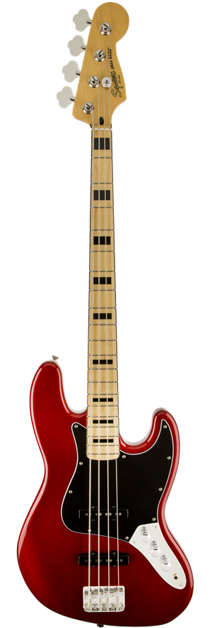
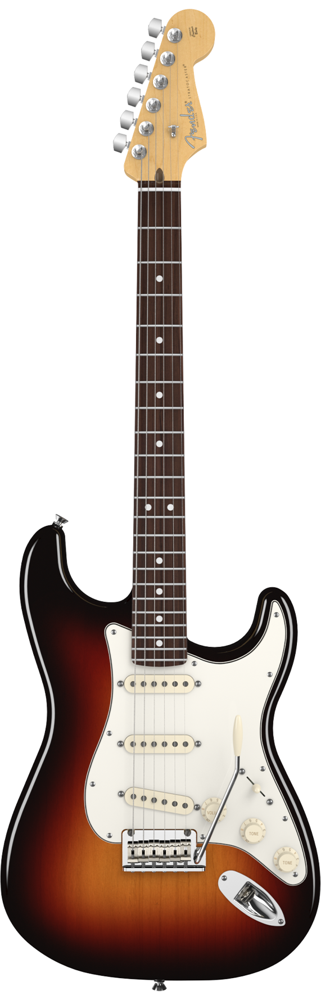

La guitarra Gibson ES-335 ha marcado un hito en la historia de la música y es uno de las guitarras eléctricas más populares y más imitadas de la historia. Esto se debe a los muchos elementos que su fabricante inicialmente incorporó en ella y también a la aceptación que ha tenido entre los mejores guitarristas del mundo. Las palabras para definirlas son: excelencia, evolución, innovación, tradición y versatilidad
El bajo Stingray ha marcado un hito en la historia de la música y es uno de los bajos eléctricos más populares y más imitados de la historia. Esto se debe a los muchos elementos que su fabricante inicialmente incorporó en él y también a la aceptación que ha tenido entre los mejores bajistas del mundo. Las palabras para definirlos son: excelencia, evolución, innovación, tradición y versatilidad


La guitarra Fender Stratocaster ha marcado un hito en la historia de la música y es uno de las guitarras eléctricas más populares y más imitadas de la historia. Esto se debe a los muchos elementos que su fabricante inicialmente incorporó en ella y también a la aceptación que ha tenido entre los mejores guitarristas del mundo. Las palabras para definirlas son: excelencia, evolución, innovación, tradición y versatilidad
 ¿Y vos que instrumento nos sugerís?
¿Y vos que instrumento nos sugerís?